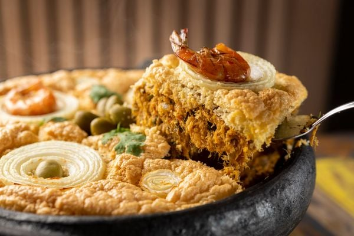
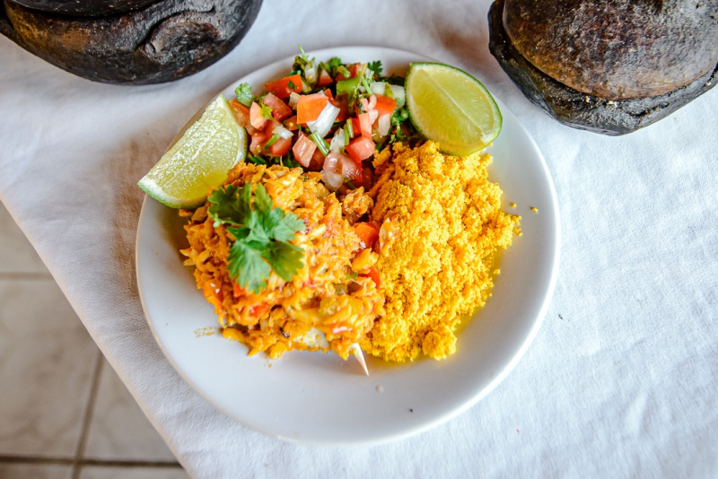

Moqueca Capixaba
- 1,5 kg de peixe fresco (robalo, badejo, papa-terra, ou namorado);
- 3 maços de coentro;
- 3 maços de cebolinha verde;
- 2 cebolas brancas (pequenas);
- 3 dentes de alho;
- 4 tomates;
- 3 limões;
- azeite de oliva;
- sementes de urucum;
- pimenta-malagueta (opcional);
- óleo de soja ou algodão;
- sal fino.
Ingredientes:
- Limpe bem o peixe, corte-o em postas de 5cm de largura, lave-o com limão e deixe-o em uma vasilha
com água de sal fraca. Separe a cabeça para preparo do pirão.
- Soque juntos o alho e o sal.
- Em uma panela de barro (grande), coloque um pouco de óleo de soja ou de algodão (duas colheres) e
azeite de oliva (uma colher) e adicione a massa obtida no socador, passando-a no fundo do recipiente.
- Retire as postas de peixe da vasilha com água e sal. Vire as postas de um lado para outro na panela,
arrumando de modo que não fiquem umas por cima das outras.
- Corte o coentro, o tomate e a cebola e os coloquem, nesta ordem, por cima das postas de peixe que
estão na panela. Regue com azeite e suco de limão.
- À parte, frite, em um pouco de óleo quente, uma colher (sopa) de sementes de urucum. Depois de fritas,
retire-as. Na hora de levar ao fogo para cozinhar, despeje um pouco desse óleo por cima do peixe para dar cor.
- Quando começar a abrir a fervura, verifique o sal. Não ponha água, não vire as postas e cozinhe com a panela bem tampada.
- Verifique o paladar do sal e do limão. Deixe no fogo forte por 20 a 25 minutos. Balance de vez em quando
a panela com o auxílio de um pedaço de pano grosso para que as postas de peixe não agarrem no fundo. Quando for à
mesa, salpique coentro picadinho.
- Como complementos da moqueca capixaba são indispensáveis o arroz branco, o pirão e o molho.
Modo de Preparo:

Torta Capixaba
- Cebola, alho, azeite doce, azeitona, limão, coentro, cebolinha verde, tomate a gosto;
- ½kg de palmito natural previamente cozido;
- 200gr de siri desfiado e cozido;
- 200gr de caranguejo desfiado e cozido;
- 200gr de camarão cozido;
- 200gr de ostra cozida;
- 200gr de sururu cozido;
- 200gr de badejo desfiado e cozido;
- 500gr de bacalhau desfiado e cozido.
Ingredientes:
Observação: Para cozinhar esses ingredientes, fazem-se as moquecas de cada um e retira-se todo o caldo, deixando-os o mais seco possível.
- Prepare um refogado com cebolas, alho, pimenta, azeite doce, azeitonas e limão.
- Junte, depois de limpos, desfiados, cozidos e espremidos, os ingredientes acima, mexendo até evaporar a água.
Retire para esfriar um pouco. Misture uma parte da espuma de 6 claras em neve com as gemas.
- Quando se adicionarem os temperos aos mariscos, deve-se colocar o bacalhau para enxugar e dar liga à massa.
- Cozinhe à parte 6 ovos, que servirão apenas para enfeite juntamente com azeitonas e rodelas de cebola.
Modo de Preparo:

Muma de Siri
- 1 kg de siri (com casco, limpo, partido ao meio e livre do fel);
- 1 kg de siri desfiado (livre do casco);
- 1 cabeça de alho (grande);
- 6 tomates (médios);
- 4 maços de coentro;
- 3 cebolas (grandes);
- 3 maços de cebolinha verde;
- 3 maços de salsa;
- 4 colheres (de sopa) de urucum (ou colorau);
- 3 limões (branco);
- sal;
- óleo (o quanto baste);
- azeite;
- 5 colheres (de sopa) bem fartas de farinha de mandioca;
- água fervente (o quanto baste).
Ingredientes:
- Na panela de barro, ponha o óleo, o urucum e metade da cabeça de alho socado. Espere o tempo necessário
para que o alho esteja refogado.
- A partir daí, tempere, à parte, o siri desfiado com o caldo de 1 limão, a outra metade da cabeça de
alho socado e sal a gosto. Junte, na panela, o siri (desfiado), os tomates (cortados em cubinhos), o
coentro (picado), a cebola (em cubinhos minúsculos), a cebolinha verde (picada) e a salsa (picada).
- Prove o sal e, caso seja necessário, acrescente-o.
- Na mesma panela, coloque o siri, que deve estar partido ao meio e temperado com o caldo de 2 limões e salpicado de sal.
- Misture-os à moqueca e espere de 10 a 15 minutos para que os siris partidos estejam cozidos.
- Quando esse cozimento for atingido, retire da panela o siri partido e reserve.
- Num recipiente, faça a seguinte mistura: farinha de mandioca e água fervente.
- Para saber qual a quantidade de água: o ideal é que esteja a farinha empapada em líquido.
- Para não empelotar, adicione essa mistura aos poucos à moquequinha na panela.
- Pronto o pirão, coloque novamente os siris partidos na panela.
- Mexa e deixe, por alguns minutos, na fervura, para que o sabor esteja em conjunto com o pirão.
- Desligue o fogo, transfira a panela de barro para a mesa.
- Use as mãos para comer. Para acompanhar, arroz branco e pimenta a gosto. Para beber, a tradicional cerveja gelada.
Modo de Preparo:

Escondidinho de Charque
- 500 gramas de carne de charque
- 120 gramas de cebola picada
- 70 gramas de pimentão verde picado
- Azeite a gosto
- 150 gramas de tomate sem semente picado
- Sal a gosto
- Pimenta-do-reino a gosto
- 1 quilo de mandioca descascada
- Sal a gosto
- 2 litros de água
- 200 mililitros de leite quente
- 1 tablete de caldo de carne
- 21 gramas de margarina
- 200 gramas de creme de leite
- 150 gramas de queijo parmesão ralado
Ingredientes (recheio):
Ingredientes (massa):
- Em uma panela com azeite, refogue a cebola e acrescente o pimentão.
- Depois, adicione a carne de charque e misture.
- Acrescente tomate picado, sal, pimenta-do-reino e misture. Reserve.
Modo de Preparo (recheio):
- Na panela de pressão, coloque a mandioca descascada, água e sal. Deixe cozinhar por 25 minutos após pegar pressão.
- Desligue o fogo, espere a pressão sair e escorra a mandioca.
- Na panela com a mandioca, despeje leite quente, caldo de galinha, margarina, creme de leite e sal. Triture com um
mixer até ficar cremoso.
- Coloque metade da mistura em uma travessa, adicione o recheio e cubra com o restante da massa.
- Salpique queijo parmesão ralado e leve ao forno até gratinar. Sirva em seguida.
Modo de Preparo (massa):